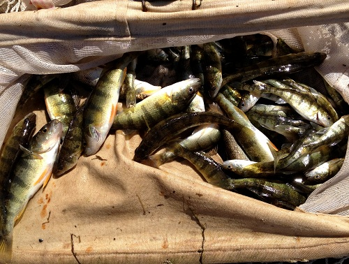

 Researchers for the North Temperate Lakes Long-Term Ecological Research program have collected fish from a number of lakes in Wisconsin since 1981. The total lengths and weights of Yellow Perch (Perca flavescens) captured from Trout Lake from 1981-2006 are recorded in YPerchTL.csv (view, download, meta). Use these data to answer the following questions. [Note that these data came from this website. See the site for more information about the sampling protocol that produced these data.]
Complete this Data Manipulation exercise to create the required data.frames used in the following questions.
Save the script from this exercise as these data will be used in this weight-length relationship, size structure, and this condition exercise.
from Derek H. Ogle , created 01-Oct-15, updated 08-Nov-15, Comments/Suggestions.